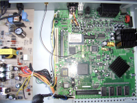
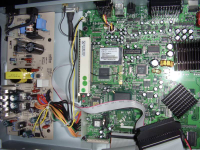
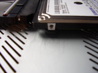
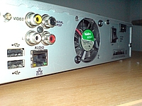
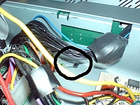

S100
Archivierte Anleitung
Dieser Artikel wurde archiviert, da er - oder Teile daraus - nur noch unter einer älteren Ubuntu-Version nutzbar ist. Diese Anleitung wird vom Wiki-Team weder auf Richtigkeit überprüft noch anderweitig gepflegt. Zusätzlich wurde der Artikel für weitere Änderungen gesperrt.
Zum Verständnis dieses Artikels sind folgende Seiten hilfreich:
T-Online Vision diente als Online-Videothek. Diese wurden über das Internet gesendet. Am 30.06.2008 wurde dieser Service eingestellt. T-Online vertrieb hierzu als Hardware die Streaming Box S100 Vision, welche fast identisch mit der Bose Zenega 101 ist. Auf der Box werkelt ein Intel® Celeron® 733 MHz. Der Arbeitsspeicher von 128 MB ist ausreichend für die Installation von Xubuntu. Im Vorfeld müssen jedoch einige Umbauten am Gerät vorgenommen werden - je nach Verwendungszweck fallen diese unterschiedlich aus. Man kann die S-100 als stromsparenden Wohnzimmer-PC, Multimedia-Center, (Streaming-) Server oder auch als Router nutzen (siehe unten).
Umbau¶
|  |
| Innenleben |
|  |
| VGA-Anschluss |
|  |
| Festplatte |
|  |
| Lüfter |
|  |
| Temperatursensor |
VGA¶
Um die Box nutzen zu können muß zuerst ein VGA-Anschluss gelötet werden. Eine Anleitung findet man im Wiki von zenega-user.de  .
.
Sofern man kein Kabel nutzen möchte kann man blind versuchen das Windows-CE zu deaktivieren:
Hier hilft die Anleitung aus dem Wiki von mymediasystem.org .
optional¶
5.1 Audio¶
Um einen Stereo-Line-Eingang zu integrieren der Anleitung folgen. Auch ist es möglich einen Analogen 5.1-Audio-Ausgang nachzurüsten.
HDD¶
Die Nutzung einer Festplatte ist entweder über den USB 2.0 möglich oder es kann nach einem Umbau ins Gehäuse integriert werden. Eine Anleitung ist hier zu finden. Es empfiehlt sich der Einbau der 2,5″-Variante, da ansonsten wegen der Wärmeentwicklung noch ein Lüfter ins Gehäuse des Gerätes integriert werden muss. Sofern man sich für den Umbau entscheidet sei hier darauf hingewisen, dass eine IDE Festplatte benutzt werden muss. Beschränkungen hinsichtlich der maximalen Festplattenkapazität müßten im Internet überpfüft werden.
Man kann auch einen SATA -> IDE-Controller verwenden (ca. 15 €). Damit lässt sich z.B. eine 2,5” Platte mit 500 GB betreiben.
Secondary IDE¶
Wem ein IDE-Kanal (Master/Slave) zu wenig ist kann den vorgesehenen zweiten Kanal nutzen, im dem man eine IDE-Buchse auf das Board einlötet (bei Conrad oder ELV erhältlich). Dafür benötigt man zunächst ein feinen Platinenbohrer um die notwendigen Löcher zu bohren - ein Drehmel dürfte es mit entsprechendem Bohrer auch tun. Das Einlöten der Buchse gestaltet sich dann relativ leicht, auch ohne spezielle SMD-Lötgeräte. Man muss nur ein Überhitzung des Boards unbedingt vermeiden.
Lüfter¶
Bei Verwendung einer internen 3.5" Festplatte sollte die S100 aktiv gekühlt werden. Gut passt ein Lüfter an der Hinterseite des Gerätes. Im Innern ist zwischen Netzteil und Board ein freier "Korridor", dessen Luftvolumen durch den Lüfter zirkuliert wird. Damit der Lüfter nicht ständig mit voller Drehzahl arbeitet, bietet sich ein Temperaturfühler an, der die Drehzahl mit der Gerätetemperatur koppelt.
CF-Card¶
Sollte noch rein, dass ein IDE-auf-CF-Adapter auch geht. Damit betreibe ich die S100 als Streaming-Client. Dabei sollte man aber beachten, dass der Adapter bootfähig ist, sonst findet er zwar den Adapter als HD, kann aber nicht davon booten. 2GB reichen mit der Partitionierung völlig als Streaming-Client: (ca. 329 MB Swap sind auch noch dabei)
1 2 3 4 5 6 | Filesystem Size Used Avail Use% Mounted on /dev/hda2 1.4G 767M 568M 58% / tmpfs 62M 0 62M 0% /lib/init/rw udev 10M 56K 10M 1% /dev tmpfs 62M 0 62M 0% /dev/shm /dev/hda3 168M 5.7M 153M 4% /home |
PCI¶
Einige Versionen der S100 besitzen einen Steckplatz für PCI-Karten. Um diesen nutzen zu können ist eine Riser-Karte notwendig. Bei fehlendem Steckplatz soll es auch Spezialisten geben, die das diffizile Unterfangen meistern können. Ansonsten würde ich da lieber meine Finger davon lassen.
PS2¶
Eine Anleitung für die Nutzung des Tastaturanschlusses PS2 ist möglich. Einige Umbauanleitung findet man im Wiki von mymediasystems.org , auf franggo.de sowie an vielen Stellen des Internets.
Installation¶
USB-Stick
externen Festplatte erfolgen sofern man keine Modifikationen am Gerät vornehmen möchte.
interne Festplatte
Je nach verwendeter Installationsart findet man im Wiki die entsprechende Dokumentation mit den jeweiligen Besonderheiten die zu beachten sind:
Live-USB - persistente Installation - Ubuntu dauerhaft als feste Installation vom USB-Stick nutzen
Hinweis:
Mitunter kann es nötig sein ein USB-Laufwerk (CD / DVD) am Gerät anzuschließen. Alternativ dieses als Slave am vorhandenen Kabel anschließen. Die Stromversorgung muss aber entweder von einem anderen PC oder einem externen Netzteil erfolgen.
DOM¶
Die Disk_on_Module kann, sofern eine Festplatte verbaut wurde, entfernt werden. Sofern man eine Installation auf dem USB-Stick vornehmen möchte, kann auf dem Modul der Bootloader GRUB sowie der Kernel abgelegt werden. Neuerdings gibt es für etwa 20-25 Euro DOMS mit einer Kapazität von 2 GB. Diese werden dann einfach auf den IDE-Anschluss gesteckt. Für weitere Geräte braucht man dann aber den üblicherweise noch nicht eingelöteten zweiten IDE-Kanal (siehe oben). Oder man bannt seine Multimedia-Daten auf eine externe USB-Platte (am besten mit externer Stromversorgung), die man dann mit zu Freunden nehmen und an den immer häufiger verkauften SAT-Receivern oder Fernseher mit integrierten Mediaplayer für externe USB-Festplatten anschließen kann.
Scart¶
WLAN¶
1. Man installiere zunächst die Pakete wireless-tools und wpasupplicant.
2. Man lege die notwendige Firmware in den Ordner /lib/firmware ab. Diese holt man sich von der Homepage http://linuxwireless.org/en/users/Drivers/p54. Bei mir (Debian Squeeze Grundsystem) (Kernel ab 2.26.29) erreicht man dies im Verzeichnis /lib/firmware befindend mit wget http://daemonizer.de/prism54/prism54-fw/fw-softmac/2.13.25.0.arm und benennt diese Datei mit mv *.arm isl3886pci um. Bei Debian Lenny: wget http://jbnote.free.fr/prism54usb/data/firmwares/3886lmac_2.7.0.0.arm und umbenennen mit mv *.arm isl3886. Dann Neustart.
3. Man teste mit iwconfig nach Neustart, ob sich nun eine Wlan-Schnittstelle findet.
4. Einrichten der /etc/network/interfaces, bei mir mit primär genutzter Ethernet-Schnittstelle:
# This file describes the network interfaces available on your system # and how to activate them. For more information, see interfaces(5). # The loopback network interface auto lo iface lo inet loopback # The primary network interface allow-hotplug eth0 iface eth0 inet dhcp # The secondary network interface allow-hotplug wlan0 iface wlan0 inet dhcp wpa-driver wext wpa-conf /etc/wpa_supplicant/wpa_supplicant.conf
5. Einrichten der /etc/wpa_supplicant/wpa_supplicant.conf. Bei mir:
ctrl_interface=/var/run/wpa_supplicant
eapol_version=1
ap_scan=1
# erstes bekanntes WLAN Name:zuhause mit WPA2-Verschlüsselung
network={
ssid="hier ändern"
id_str="zuhause"
scan_ssid=1
proto=RSN
key_mgmt=WPA-PSK
pairwise=CCMP
group=TKIP CCMP
psk="hier abändern"
}
6. Neustart und voila! Have fun...
Problemlösungen¶
Neustart¶
Das System bleibt in einer Rebootschleife hängen. Eine neue Firmware ist nötig:
Bios¶
Im Bios kann die verwendete Biosversion in der Bios-ID abgelesen werden. Wichtig sind hier lediglich die letzten drei Ziffern. 107 entspricht der Version 1.07. Im Wiki von zenega-user.de wird beschrieben wie man, unter Linux, auf Version 1.09 upgraden bzw. auf 1.00 downgraden kann. Version 1.09 behebt Probleme mit der Neustartschleife bei angehängten USB-Geräten.
| Tasten | |
| Bios | |
| F11 | Auswahl des Boot-Laufwerkes |
| F12 | Netzwerk-Boot |
| Entf | BIOS-Setup |
xorg.conf¶
Beispielkonfiguration aus dem Forum:
Section "ServerLayout"
Identifier "X.org Configured"
Screen 0 "Screen0" 0 0
InputDevice "Mouse0" "CorePointer"
InputDevice "Keyboard0" "CoreKeyboard"
EndSection
Section "Files"
FontPath "/usr/share/fonts/X11/misc"
FontPath "/usr/share/fonts/X11/cyrillic"
FontPath "/usr/share/fonts/X11//100dpi/:unscaled"
FontPath "/usr/share/fonts/X11//75dpi/:unscaled"
FontPath "/usr/share/fonts/X11//Type1"
FontPath "/usr/share/fonts/X11//100dpi"
FontPath "/usr/share/fonts/X11//75dpi"
EndSection
Section "Module"
Load "record"
Load "bitmap"
Load "extmod"
Load "dbe"
Load "ddc"
Load "dri"
Load "drm"
Load "glx"
Load "int10"
Load "freetype"
Load "type1"
Load "vbe"
EndSection
Section "InputDevice"
Identifier "Keyboard0"
Driver "kbd"
option "XkbModel" "pc105"
option "XkbLayout" "de"
option "XkbVariant" "nodeadkeys"
EndSection
Section "InputDevice"
Identifier "Mouse0"
Driver "mouse"
Option "Protocol" "auto"
Option "Device" "/dev/input/mice"
EndSection
Section "Monitor"
Identifier "Monitor0"
VendorName "Monitor Vendor"
ModelName "Monitor Model"
# Option "DPMS"
VertRefresh 48-60
EndSection
Section "Screen"
Identifier "Screen0"
Device "Intel_IEGD-0"
Monitor "Monitor0"
DefaultDepth 24
SubSection "Display"
Modes "720x576"
Depth 24
EndSubSection
EndSection
Section "DRI"
Mode 0666
EndSection
##
## X Config options generated from PCF file
## **** Not for Production use at this time ****
##
Section "Device"
Identifier "Intel_IEGD-0"
Driver "intel"
VendorName "Intel(R) DEG"
BoardName "Embedded Graphics"
BusID "0:2:0"
VideoRam 4096
Screen 0
Option "PcfVersion" "1024"
Option "pd/fs454" "1"
Option "Config/1/General/PortOrder" "2500"
Option "Config/1/General/DisplayConfig" "2"
Option "Config/1/General/XVideoMC" "1"
Option "Config/1/General/CloneWidth" "720"
Option "Config/1/General/CloneHeight" "576"
Option "Config/1/General/CloneRefresh" "50"
Option "Config/1/General/DRI" "Yes"
Option "Config/1/Port/2/name" "TV-Out via Focus 454"
Option "Config/1/Port/2/General/Rotation" "0"
Option "Config/1/Port/2/General/Edid" "1"
Option "Config/1/Port/2/General/EdidAvail" "1"
Option "Config/1/Port/2/General/EdidNotAvail" "1"
Option "Config/1/Port/2/General/MultiDvo" "0"
# Helligkeit (0-100)
Option "Config/1/Port/2/Attr/0" "20"
# Kontrast (0-100)
Option "Config/1/Port/2/Attr/1" "100"
# Flicker (0-1000)
Option "Config/1/Port/2/Attr/3" "100"
# H-Position (0-100)
Option "Config/1/Port/2/Attr/4" "40"
# v-Position (0-100)
Option "Config/1/Port/2/Attr/5" "23"
# H-Skalierung (0-1000)
Option "Config/1/Port/2/Attr/6" "630"
# V-Skalierung (0-1000)
Option "Config/1/Port/2/Attr/7" "525"
# TV-Format (3=PAL)
Option "Config/1/Port/2/Attr/8" "3"
# Luma Filter (0/1)
Option "Config/1/Port/2/Attr/10" "1"
# Croma Filter (0/1)
Option "Config/1/Port/2/Attr/11" "1"
# Video Copy Protection
Option "Config/1/Port/2/Attr/13" "0"
# TV Output Format (4=YPrPB, 5=SCART-RGB)
Option "Config/1/Port/2/Attr/14" "4"
# Farbsaetigung
Option "Config/1/Port/2/Attr/15" "50"
# Schaerfe (0-1000) ???
Option "Config/1/Port/2/Attr/26" "30"
# DVO Datenordnung (0=Normal)
Option "Config/1/Port/2/Attr/30" "0"
# Schaerfe (0-1000)
Option "Config/1/Port/2/Attr/31" "30"
# HW Config (0=Standard)
Option "Config/1/Port/2/Attr/32" "0"
# Horizontalfilter
Option "Config/1/Port/2/Attr/33" "50"
#
# VGA-Anschluss
#
Option "Config/1/Port/5/name" "Analog"
Option "Config/1/Port/5/General/Rotation" "0"
Option "Config/1/Port/5/General/Edid" "1"
Option "Config/1/Port/5/General/EdidAvail" "1"
Option "Config/1/Port/5/General/EdidNotAvail" "1"
Option "Config/1/Port/5/General/MultiDvo" "0"
EndSection
Section "ServerFlags"
Option "AIGLX" "off"
Option "IgnoreABI" "True"
EndSection
Section "Extensions"
Option "Composite" "Disable"
EndSection
##
## X Config options generated from PCF file
## **** Not for Production use at this time ****
## Use this section for 2nd Screen in Dual Independent Head
## or Xinerama configurations.
##
Section "Device"
Identifier "Intel_IEGD-1"
Driver "intel"
VendorName "Intel(R) DEG"
BoardName "Embedded Graphics"
BusID "0:2:0"
Screen 1
EndSectionVerwendungsmöglichkeiten¶
(ohne detaillierte Anleitungen)
MediaBox¶
In Verbindung mit einer minimalen Linux-Distribution (z.B. Debian) und MMS auf einem USB-Stick, einem DOM, einer CF-Card oder auf einer (internen/externen) Festplatte (s.o.), kann die S100 in eine veritable Schaltzentrale für Multimedia-Dateien umgewandelt werden. Die Media-Daten könnnen dann intern oder extern auf einer Festplatte liegen, oder per Ethernet und NFS/Samba-Server auf der/den Festplatten des Servers/Routers des LANs. Vorteil der Verwendung einer CF-Karte (2GB reichen, billiger als ein DOM) ist erstens die Integration im Gerät (per montiertem IDE-CF-Card-Adapter), zweitens die absolute Lautlosigkeit (leise externe HD ohne Lüfter oder räumlich getrennter/lautloser Server vorausgesetzt) und drittens die Möglichkeit einer einfachen und schnellen Systemwiederherstellung mit dd: nach der Installation und erfolgreichen Konfiguration kann man das System per dd "Bit-genaues" auslesen und per SSH oder per Cardreader am Desktop-PC sichern. Falls man später das System der Box zerschossen hat oder zu viel Ballast installiert hat o.ä., kann man System etwa durch einen CardReader am Desktop-PC in kürzester Zeit wieder herstellen, ohne das System neu aufzusetzten und sämtliche Pakete installieren und konfigurieren zu müssen (werde evtl. bald ein Image via FTP-Server (auf einem S100-Server natürlich  ) zur Verfügung stellen).
) zur Verfügung stellen).
Server¶
Mit bspw. Debian kann man sich - bei Verwendung einer CF-Card (kostengünstiger als ein DOM bei ausreichender Geschwindigkeit) und externen HDs an einem aktiven USB-Hub (Netzteil!) einen lautlosen Server aufbauen. Vorteil ggü. anderen Servern in Desktop-Gehäusen ist ein niedriger Stromverbrauch und eben die Lautlosigkeit. Bei mir läuft auf dem Server NFS (für meine S100-Mediabox), Samba (für einen verbliebenen Windows-Rechner oder Laptop-Besucher mit Windows-Installation), CUPS für ein am USB-Hub des S100-Server hängender Netzwerk-Drucker, ein Download- (pyLOAD) und Torrent-Client Transmission sowie ein Musik-Server (MPD). Etwas anspruchvoller ist das Aufsetzten eines Mail-Servers. Mir genügt hingegen ein IMAP-Server (Dovecot) und Fetchmail. Dies ermöglicht, dass die Mail-Clients (bei mir Evolution) aller Pcs bzw. Laptop des LANs denselben Zustand bzw. Aktualität besitzen.
(Freifunk)-Router¶
Nähere Infos unter: S100 als Router
Hardware-Info¶
| T-Online S-100 Vision | |
| Bose Zenega 101 | |
| Grafikkarte | Intel® 830M |
| CPU | Intel® Celeron® 733 MHz |
| Bios | AMI |
| Flash Memory | 32 MB DOM |
| RAM | 128 MB SDRAM |
| Soundkarte | OnBoard |
| WLAN | Intersil Corporation ISL3890 |
| HD | optional |
| CD/DVD | optional (extern) |
| Anschlüsse | Video analog, Audio analog, Audio digital (S/PDIF), Scart (TV / VCR), S-Video, RJ45, VGA (optional), 100 MBit Netzwerkkarte, PCI, Mini-PCI, PATA (IDE-Anschluss) und USB 2.0 |
| Stromverbrauch | ~4 - ~40 Watt |
Links¶
wiki.zenega-user.de
- Geräteumbaulinux-community.de
- Miniserie Teil 1linux-community.de
- Miniserie Teil 2
Wiki: MMS auf S100 - My Media System auf der S100
Forum: MMS auf S100
- My Media System auf der S100Forum: MMS
- My Media System
- Erstellt mit Inyoka
-
 2004 – 2017 ubuntuusers.de • Einige Rechte vorbehalten
2004 – 2017 ubuntuusers.de • Einige Rechte vorbehalten
Lizenz • Kontakt • Datenschutz • Impressum • Serverstatus -
Serverhousing gespendet von